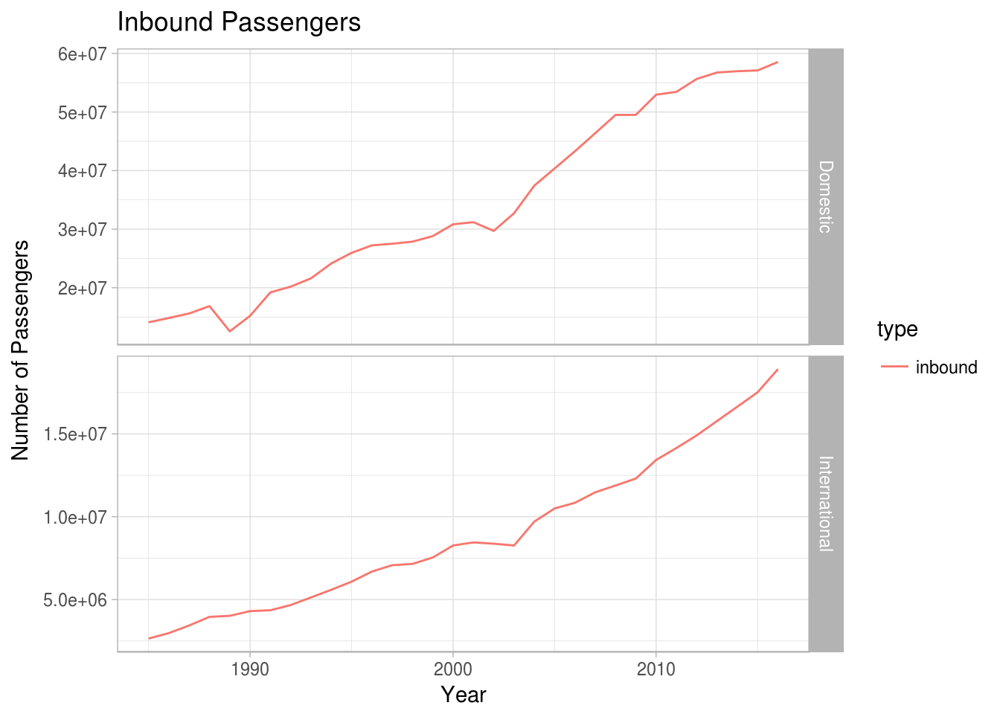

Welcome to Ozflights! Get the data for passenger, aircraft and international freight movements for both metropolitan and regional airports in Australia. The dataset covers 1985-2016.
You can install ozflights from github:
#install.packages("devtools")
devtools:install_github(ropensci/ozflights)To access the data on airport passengers, use the function airport_passengers().
passengers <- ozflights::airport_passengers()We’ll just look at the total for Australia.
library(ggplot2)
passengers_aus <- dplyr::filter(passengers, airport == "TOTAL AUSTRALIA")
passengers_aus$domest <- factor(passengers_aus$domest, levels = c(TRUE, FALSE), labels = c("Domestic", "International"))
passengers_aus_in <- dplyr::filter(passengers_aus, type == "inbound")
ggplot(passengers_aus_in)+
labs(x="Year", y="Number of Passengers")+
facet_grid(domest~., scale="free")+
geom_line(aes(year, count, colour = type))+
theme_light()+
ggtitle("Inbound Passengers")